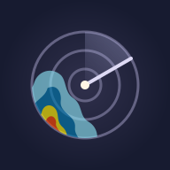
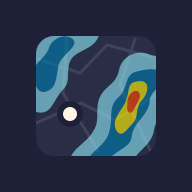
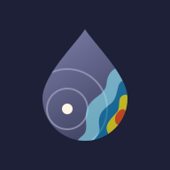
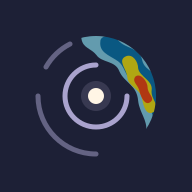

Radar sweep
A radar dial frames part of a larger storm. Enlarged precipitation is cropped at the left and bottom of the circular radar window.
64 px circle · 48 px rounded · 32 px circle
Open SVG ↗
Deep indigo with the app's Universal Blue rain colors at its default 65% opacity. Each concept contains a cropped vector precipitation section, with muted cyan, blue, yellow and orange-red blended into the background.

A radar dial frames part of a larger storm. Enlarged precipitation is cropped at the left and bottom of the circular radar window.

A rounded map window cuts through two larger precipitation bands. The weather continues beyond its edges, like a zoomed-in radar map.

A lavender drop frames a small part of a larger radar map. Oversized precipitation continues beyond the right and bottom edges, cropped by the silhouette.

You at the center, with a portion of an approaching storm cropped by the top and right edges of the circular radar window.